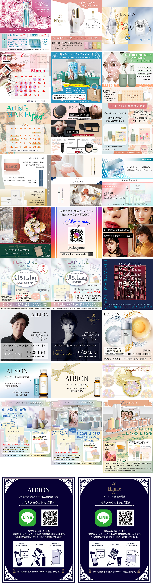

Apr.2021--Mar.2024
化粧品会社 LINE配信運用全般
化粧品メーカーの全国の百貨店に入っている60あまりのコーナーのLINEアカウントを運用。
全社的な新製品やキャンペーンの紹介、コーナー独自の個別イベントなど、薬事を鑑みた配信文やバナーを作成し、月間10〜50の配信をしていました。
配信文とバナーの校正などの進行管理はもちろん、LINE管理画面内のアナリティクスを参考に、バナーの見せ方などを試行錯誤しました。
LINE内、ショップカードやアンケートなどにも全アカウントで作成、運用し、集計も対応。
23年6月の料金改定伴い、翌月の配信数によって、LINE料金プランを最適な状態に変更しておくなど、状況に合わせて運用全般を対応しました。
バナーは商品画像のみからオリジナルで作成する場合も多く、全社的なビジュアルイメージに合ったものを心がけ、2つ連なる場合は色などで統一感を持たせる様にしました。
また、説明など文章多めのバナーも多く、片仮名の商品名などは認知されにくいため、改行位置や読み易いサイズで文字詰めなども意識しています。
他LINE関連では、 店頭に置かれるLINE誘導POPも作成。ブランドを象徴するアイテムなどのイラストもIllustratorで作成しています。
